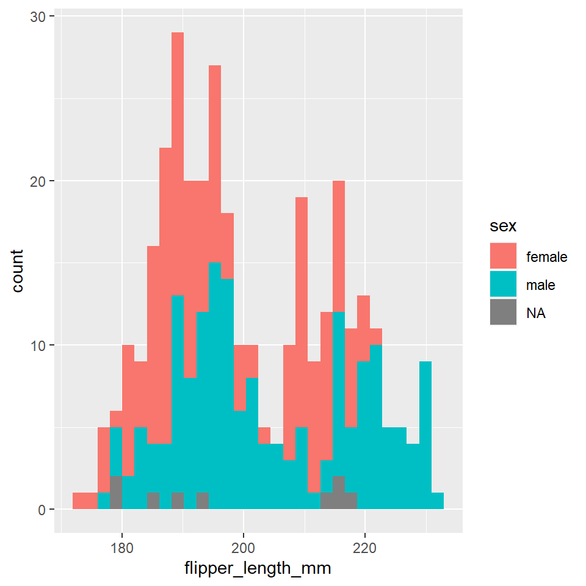
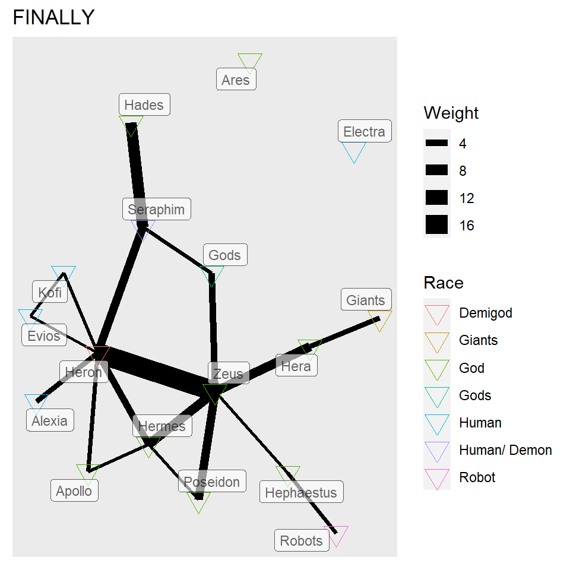

Graph 1
For this map i took the star wars data set which had the variables name, height, mass, hair color, skin color, eye color, birth year, sex , gender, homeworld, species, films, vehicles and starships.
My intent in this graph was to find out which all species have lived on the planet of Naboo.
## # A tibble: 87 x 14
## name height mass hair_color skin_color eye_color birth_year sex gender
## <chr> <int> <dbl> <chr> <chr> <chr> <dbl> <chr> <chr>
## 1 Luke S~ 172 77 blond fair blue 19 male mascu~
## 2 C-3PO 167 75 <NA> gold yellow 112 none mascu~
## 3 R2-D2 96 32 <NA> white, bl~ red 33 none mascu~
## 4 Darth ~ 202 136 none white yellow 41.9 male mascu~
## 5 Leia O~ 150 49 brown light brown 19 fema~ femin~
## 6 Owen L~ 178 120 brown, grey light blue 52 male mascu~
## 7 Beru W~ 165 75 brown light blue 47 fema~ femin~
## 8 R5-D4 97 32 <NA> white, red red NA none mascu~
## 9 Biggs ~ 183 84 black light brown 24 male mascu~
## 10 Obi-Wa~ 182 77 auburn, wh~ fair blue-gray 57 male mascu~
## # ... with 77 more rows, and 5 more variables: homeworld <chr>, species <chr>,
## # films <list>, vehicles <list>, starships <list>
## Rows: 87
## Columns: 14
## $ name <chr> "Luke Skywalker", "C-3PO", "R2-D2", "Darth Vader", "Leia Or~
## $ height <int> 172, 167, 96, 202, 150, 178, 165, 97, 183, 182, 188, 180, 2~
## $ mass <dbl> 77.0, 75.0, 32.0, 136.0, 49.0, 120.0, 75.0, 32.0, 84.0, 77.~
## $ hair_color <chr> "blond", NA, NA, "none", "brown", "brown, grey", "brown", N~
## $ skin_color <chr> "fair", "gold", "white, blue", "white", "light", "light", "~
## $ eye_color <chr> "blue", "yellow", "red", "yellow", "brown", "blue", "blue",~
## $ birth_year <dbl> 19.0, 112.0, 33.0, 41.9, 19.0, 52.0, 47.0, NA, 24.0, 57.0, ~
## $ sex <chr> "male", "none", "none", "male", "female", "male", "female",~
## $ gender <chr> "masculine", "masculine", "masculine", "masculine", "femini~
## $ homeworld <chr> "Tatooine", "Tatooine", "Naboo", "Tatooine", "Alderaan", "T~
## $ species <chr> "Human", "Droid", "Droid", "Human", "Human", "Human", "Huma~
## $ films <list> <"The Empire Strikes Back", "Revenge of the Sith", "Return~
## $ vehicles <list> <"Snowspeeder", "Imperial Speeder Bike">, <>, <>, <>, "Imp~
## $ starships <list> <"X-wing", "Imperial shuttle">, <>, <>, "TIE Advanced x1",~

Graph 2
In the first week we were also told to make a graph using a penguins dataset. The graph i’m showing below shows the flipper length in milli-meters of the male and female population.
The variables for this table are: Species, Island, Bill length in milli meters, Bill depth in millimeters, Flipper depth in millimeters, Body mass in grams, Sex and Year.
## [1] "species" "island" "bill_length_mm"
## [4] "bill_depth_mm" "flipper_length_mm" "body_mass_g"
## [7] "sex" "year"
## # A tibble: 6 x 8
## species island bill_length_mm bill_depth_mm flipper_length_~ body_mass_g sex
## <fct> <fct> <dbl> <dbl> <int> <int> <fct>
## 1 Adelie Torge~ 39.1 18.7 181 3750 male
## 2 Adelie Torge~ 39.5 17.4 186 3800 fema~
## 3 Adelie Torge~ 40.3 18 195 3250 fema~
## 4 Adelie Torge~ NA NA NA NA <NA>
## 5 Adelie Torge~ 36.7 19.3 193 3450 fema~
## 6 Adelie Torge~ 39.3 20.6 190 3650 male
## # ... with 1 more variable: year <int>
## # A tibble: 6 x 8
## species island bill_length_mm bill_depth_mm flipper_length_~ body_mass_g sex
## <fct> <fct> <dbl> <dbl> <int> <int> <fct>
## 1 Chinst~ Dream 45.7 17 195 3650 fema~
## 2 Chinst~ Dream 55.8 19.8 207 4000 male
## 3 Chinst~ Dream 43.5 18.1 202 3400 fema~
## 4 Chinst~ Dream 49.6 18.2 193 3775 male
## 5 Chinst~ Dream 50.8 19 210 4100 male
## 6 Chinst~ Dream 50.2 18.7 198 3775 fema~
## # ... with 1 more variable: year <int>
## [1] 344 8
## [1] TRUE

Graph 3.
In this assignment we were told to make a csv file with our own dataset on a particular episode of a particular tv show, movie, book, etc. I chose the show Blood Of Zeus which is on Netflix as that was the last show i watched during the holidays.
The graph bellow shows us the number of characters, the race of the characters and the weight of dialogues between the characters. The variables for this graph were Name, Sex, Race, Eye colour, Hair colour, Status and Dialogue weight.
## # A tibble: 22 x 4
## From To Weight Type
## <dbl> <dbl> <dbl> <chr>
## 1 3 16 3 Associates
## 2 13 6 1 Family
## 3 1 13 6 Brothers
## 4 1 17 4 Family
## 5 6 1 7 Family
## 6 2 6 5 Brothers
## 7 1 2 17 Family
## 8 7 2 2 Brothers
## 9 10 2 1 Friends
## 10 9 2 1 Friends
## # ... with 12 more rows
## # A tibble: 17 x 7
## Name `Node id` Sex Race `Eye colour` `Hair colour` Status
## <chr> <dbl> <chr> <chr> <chr> <chr> <chr>
## 1 Zeus 1 Male God Blue Dark Grey Dead
## 2 Heron 2 Male Demigod Blue Brown Alive
## 3 Hera 3 Female God Blue Aubergine Alive
## 4 Electra 4 Female Human Brown Brown Alive
## 5 Seraphim 5 Male Human/ De~ Brown/Red White Dead
## 6 Hermes 6 Male God Blue Light Brown Alive
## 7 Apollo 7 Male God Yellow Blonde Alive
## 8 Hephaest~ 8 Male God Brown Brown Alive
## 9 Kofi 9 Male Human Dark Brown Brown Alive
## 10 Evios 10 Male Human Brown Light Brown Alive
## 11 Alexia 11 Female Human Hazel Blonde Alive
## 12 Ares 12 Male God Red Black Alive
## 13 Poseidon 13 Male God Yellow Blue Alive
## 14 Hades 14 Male God Yellow Black Alive
## 15 Robots 15 <NA> Robot <NA> <NA> Alive
## 16 Giants 16 <NA> Giants Black/ Red <NA> Dead
## 17 Gods 17 Male & Fema~ Gods <NA> <NA> Alive
## # A tbl_graph: 17 nodes and 22 edges
## #
## # An undirected multigraph with 3 components
## #
## # Node Data: 17 x 7 (active)
## Name `Node id` Sex Race `Eye colour` `Hair colour` Status
## <chr> <dbl> <chr> <chr> <chr> <chr> <chr>
## 1 Zeus 1 Male God Blue Dark Grey Dead
## 2 Heron 2 Male Demigod Blue Brown Alive
## 3 Hera 3 Female God Blue Aubergine Alive
## 4 Electra 4 Female Human Brown Brown Alive
## 5 Seraphim 5 Male Human/ Demon Brown/Red White Dead
## 6 Hermes 6 Male God Blue Light Brown Alive
## # ... with 11 more rows
## #
## # Edge Data: 22 x 4
## from to Weight Type
## <int> <int> <dbl> <chr>
## 1 3 16 3 Associates
## 2 6 13 1 Family
## 3 1 13 6 Brothers
## # ... with 19 more rows
